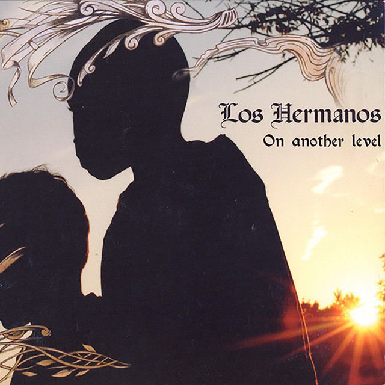

Los Hermanos - On Another Level



Información del álbum facilitada por discogs.com:
Fecha de lanzamiento: 2004
Géneros: Electronic
Estilos: Techno
Tracklist:
-
Welcome To Los Hermanos (f2eat. Isela Salazar) 1:41
-
The Very Existence 5:11
-
In Deeper Presence 4:37
-
The Kombination 0:57
-
Birth Of 3000 5:15
-
Queztal 6:38
-
Sun Dial 3:45
-
Lines Of Nazca 4:46
-
Olmc My Brother 5:09
-
Return Of The Dragon (Los Hermanos Remix) (f2eat. Los Hermanos) 4:12
-
Resurrection 5:02
-
Sacrifice 3:41
-
Guidance 3:37
-
My Mother Guitarra 3:58
-
Galaxy Traveler 1:48
Video. (Short Documentary Film) 9:33